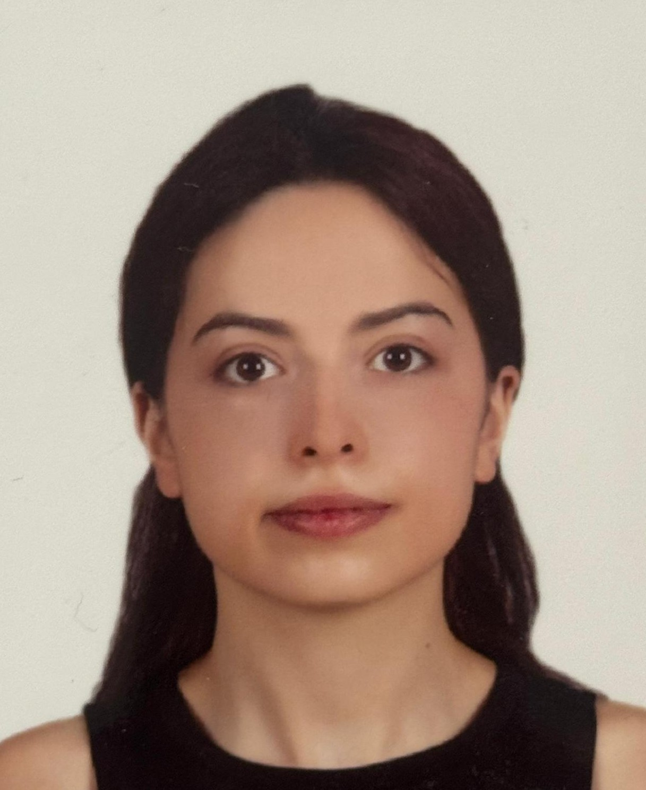
About Me
I am a Master's student in Automation and Control Engineering at Politecnico di Milano. My research focuses on the intersection of robot control, computer vision, and machine learning to enable intelligent and adaptive robotic manipulation.
I completed my Bachelor's degree in Mechatronics Engineering at Sabancı University (GPA: 3.50/4.0). I have conducted research at prestigious labs including the Munich Institute of Robotics and Machine Intelligence (MIRMI) at TUM and the PRISMA Lab at the University of Naples Federico II.
Research Interests
- Robot Control & Manipulation
- Computer Vision for Robotics
- Aerial Robotics
- Robot Learning
- Human-Robot Interaction
- Machine Learning & AI
News
- Jun 2026 Attended the ETH Zürich Robotics Summer School (autonomous exploration on a Unitree A2 quadruped)
- Nov 2025 Started MSc in Automation and Control Engineering at Politecnico di Milano
- Jul 2025 Completed research internship at MIRMI Lab, TUM, Munich
- Sep 2024 Completed research internship at PRISMA Lab, University of Naples
- Jun 2025 Graduated with BSc in Mechatronics Engineering from Sabancı University
Research Experience
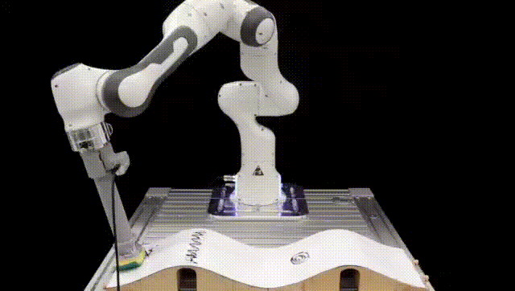
Vision-Augmented Autonomous Surface Cleaning with Force-Impedance Control
Munich Institute of Robotics and Machine Intelligence (MIRMI), TUM | May - July 2025
Developed a vision-augmented force-impedance control framework for autonomous surface cleaning using Franka Emika Panda robot and Intel RealSense D455 camera. Implemented Markov Decision Process (MDP) planner with Bayesian belief updating for intelligent surface coverage motion planning and real-time stain detection on unknown 3D surfaces.
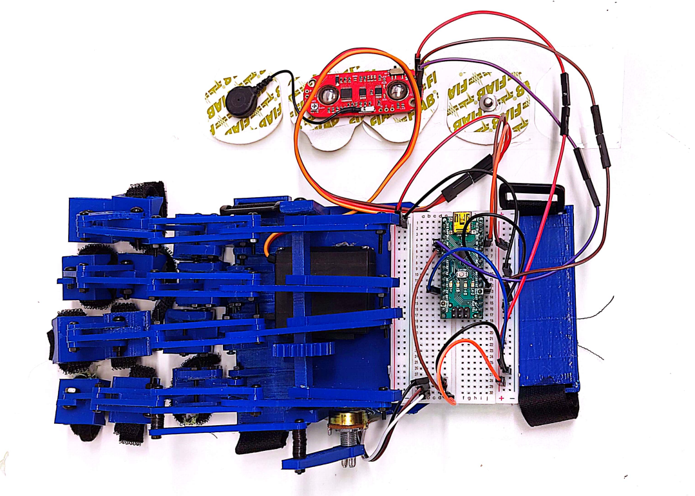
EMG-Based Control of Hand Exoskeleton with Machine Learning
PRISMA Lab, University of Naples Federico II | June - September 2024
Designed, 3D printed, and assembled a hand exoskeleton with a four-bar linkage system using SolidWorks. Developed hardware for EMG-based control and implemented machine learning algorithms to classify hand states through EMG data. Integrated the algorithms for real-time actuation of the hand exoskeleton.
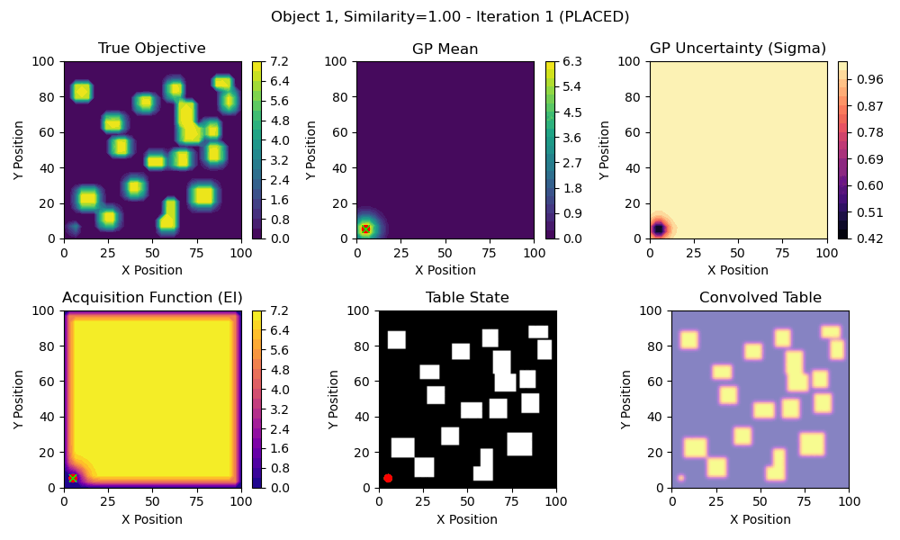
Bayesian Optimization for Sequential Object Placement and Rearrangement
Sabancı University, Graduation Project | 2024 - 2025
Developing an algorithm using Bayesian Optimization with transfer learning for sequential object placement and rearrangement with collision-free arrangements on cluttered surfaces. The system enables efficient planning for robotic manipulation tasks in complex environments.
Autonomous Exploration and Artifact Mapping on a Quadruped Robot
ETH Zürich Robotics Summer School | June 2026
Team program deploying a full autonomous exploration-and-perception stack on a Unitree A2 quadruped for a simulated search-and-rescue mission, taking a provided ROS 2 framework (DLIO lidar-inertial localization, TARE/FAR planners for exploration and return-to-home, YOLO detection fused with LiDAR) from simulation onto real hardware. My contribution was the artifact-mapping layer: a node that transforms detections into the map frame and confirms them through a temporal + spatial voting scheme, so an object is logged only after enough sightings with a consistent majority class, rejecting single-frame misclassifications and stabilizing both the label and the 3D position.
Course Projects
Obstacle-Aware Quadrotor Control via Nonlinear MPC and Artificial Potential Fields
Politecnico di Milano, Aerial Robotics Course | Spring 2026
Designed a quaternion-based Nonlinear MPC for quadrotor obstacle avoidance and aggressive maneuvers, solved online with acados SQP-RTI in Gazebo. Studied where avoidance should live: as a formal keep-out constraint inside the NMPC versus an Artificial Potential Field planner whose collision-free references the NMPC merely tracks. Implemented both on the same controller and the same lidar/DBSCAN perception, and compared them head-to-head on an in-line slalom at a matched obstacle clearance. Identified a shared attitude-runaway speed limit and showed the APF advantage stems from wider look-ahead, not the architecture. Also executed a feedforward Lupashin backflip with NMPC recovery, settling within 0.1 m of the hover point.
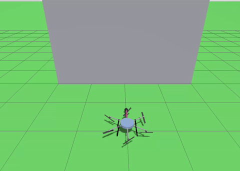
Aerial Robotics: From Hover to Physical Interaction with a Wall
Politecnico di Milano, Aerial Robotics Course | Spring 2026
Built a complete multi-rotor UAV software stack on top of the telekyb3 / GenoM3 framework (LAAS-CNRS / IRISA-Inria / Twente / UCL), driving a fully-actuated tilt-hexarotor in Gazebo. Covered the full chain from rigid-body modeling and minimum-snap trajectory generation, through cascaded geometric position + attitude control, to physical interaction with a wall using a momentum-based wrench observer and an admittance filter. Designed an L-shaped end-effector (vertical bar + horizontal bar + sphere tip), tuned the contact geometry so the steady-state normal force satisfies the 2 N inspection requirement, and validated the full inspection-square trajectory in Gazebo.
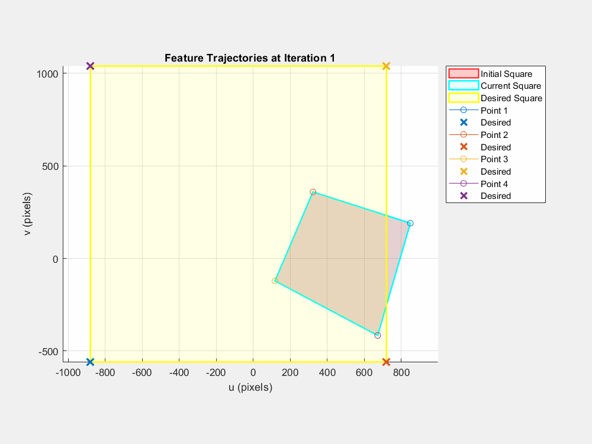
Implementation and Analysis of Adaptive Switch Image-Based Visual Servoing for Industrial Robots
Sabancı University, Vision Based Control (EE 529) | Fall 2024
Implemented and validated the Adaptive Switch IBVS controller from Ghasemi et al. (2020) using MATLAB simulation with UR5 robot model. Developed a three-stage control strategy that switches between pure rotation, pure translation, and full IBVS based on rotation angle thresholds. Achieved 27-34% faster convergence compared to traditional IBVS, and successfully handled extreme orientation mismatches (200°+) where traditional methods failed. Comparative analysis demonstrated smooth feature trajectories and robust performance across multiple test scenarios.
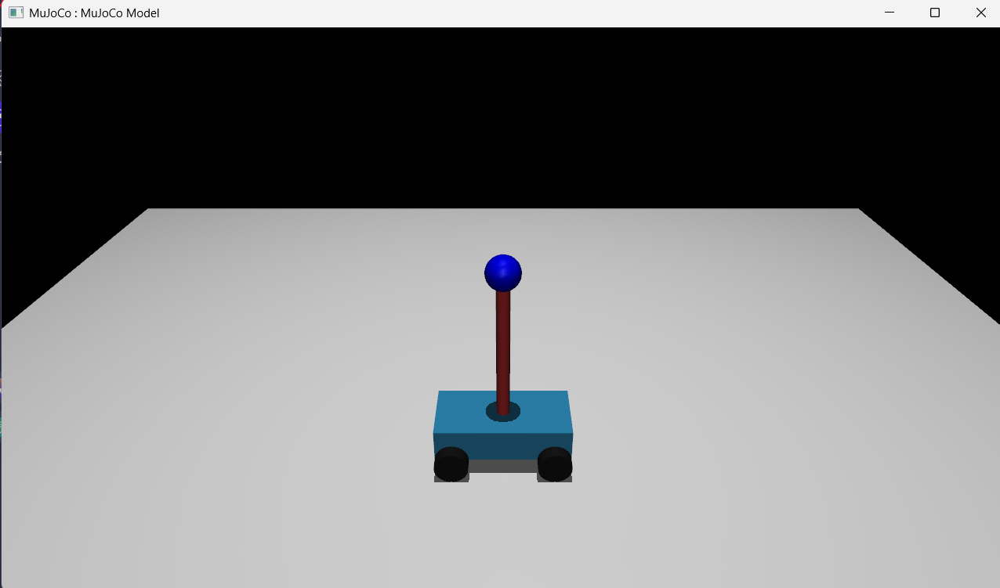
Advanced Cart-Pole Swing-Up Control with JAX and MuJoCo
Sabancı University, Deep Learning for Robot Control (ME 58006) | Fall 2024
Developed a data-driven system identification framework for the Cart-Pole system, utilizing JAX, Diffrax, and Optax to estimate system parameters and analyze motion trajectories. Implemented a neural network-based controller to perform Cart-Pole swing-up and stabilization, optimizing trajectory costs and comparing performance with LQR control. Engineered a Mixture-of-Experts controller, integrating state-dependent switching for autonomous robotic motion control, improving stability.
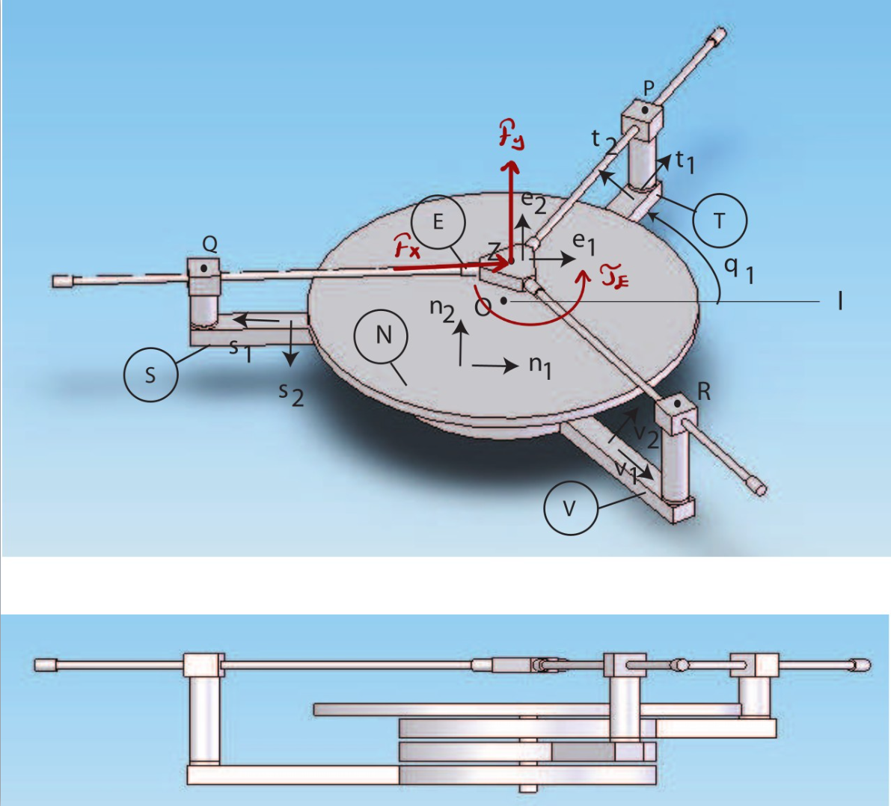
Kinematic and Dynamic Analysis of the 3RRP Mechanism
Sabancı University, Kinematics and Dynamics of Machines (EE 521) | Fall 2024
Developed a MATLAB-based dynamic simulation for a 3RRP Mechanism and a Linear Delta Mechanism, implementing forward/inverse kinematics, Jacobian-based motion analysis, and Baumgarte-stabilized integration for constraint handling. Formulated and derived equations of motion using Kane's Method and Lagrange's Equations, analyzing workspace and singular configurations.
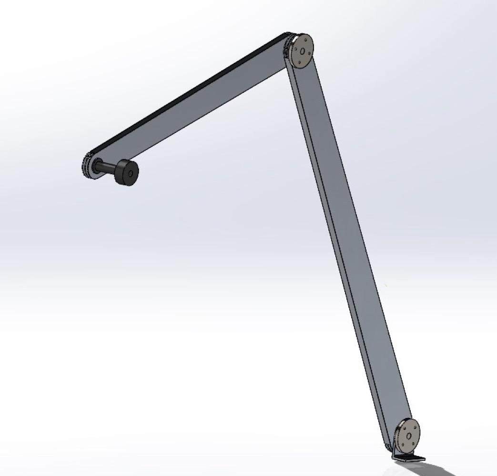
Design and Control of a Planar Elbow Manipulator
Sabancı University, Introduction to Robotics (ME 403) | Spring 2024
Engineered a 3-DoF planar elbow manipulator with optimized kinematic analysis. Implemented comprehensive forward and inverse kinematics solutions. Developed dynamic models using MATLAB/Simulink for simulation and control analysis. Designed robust PID and computed torque controllers for enhanced trajectory following and improved end-effector positioning accuracy.
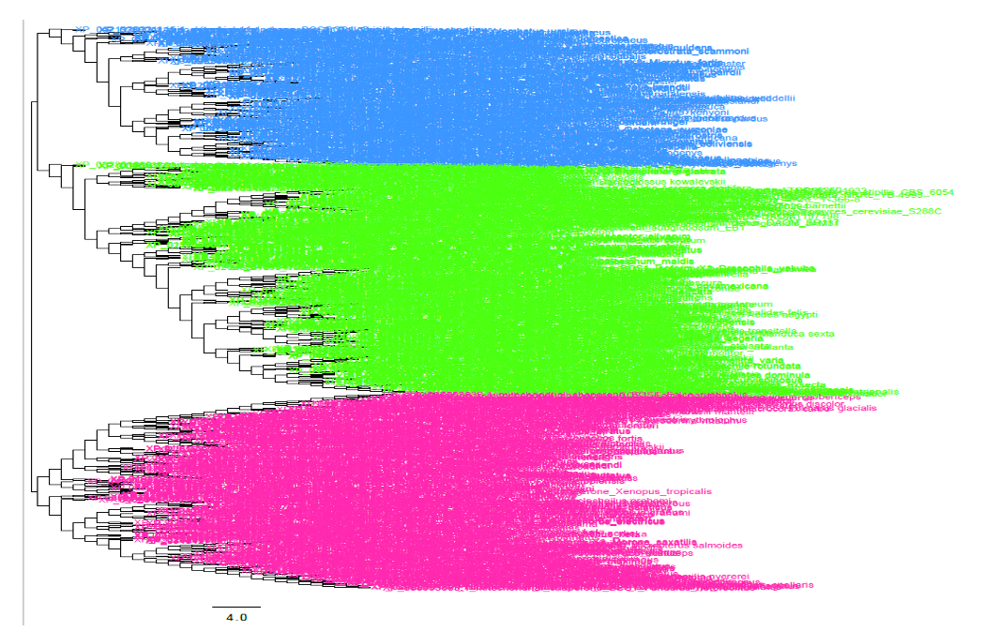
Björnstad Syndrome BCS1L Gene VUS Pathogenicity Classifier
Sabancı University, Computational Biology (ENS 210) | Fall 2022
Developed a Python-based algorithm to classify Variants of Unknown Significance (VUS) in the BCS1L gene associated with Björnstad Syndrome as pathogenic or benign. Retrieved 1000 homologous sequences via BLASTp, performed MUSCLE alignment in MEGA11, and built a Neighbor-Joining phylogenetic tree rerooted in FigTree. Implemented a conservation score-based classification algorithm with three thresholds, successfully classifying 26 pathogenic and 8 benign variants out of 34 VUS positions.
Technical Skills
Programming
Python, C++, Java, MATLAB/Simulink
Robotics
ROS, Franka Emika Panda, Force-Impedance Control, Visual Servoing
Machine Learning
TensorFlow, PyTorch, JAX, Scikit-learn, Neural Networks
Computer Vision
OpenCV, Point Cloud Processing, Camera Calibration, Feature Extraction
Design & CAD
SolidWorks, 3D Printing, Prototyping
Tools
Git, Linux, LTSpice, Autolev
Awards & Competitions
-
First Robotics Competition (FRC) - Innovation in Control Award | 2018
Team Cymurghs #7466 -
World Robot Olympiad (WRO) - 2nd Prize | 2018
Turkey National Competition, Regular Category - Road to VEX (Mechaton) - Competition 3rd Prize & Engineering Design 1st Prize | 2018
-
First Lego League (FLL) - 2nd Prize | 2017
Qualified for National Tournament

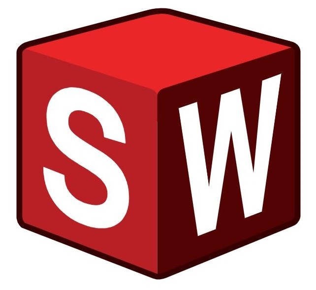